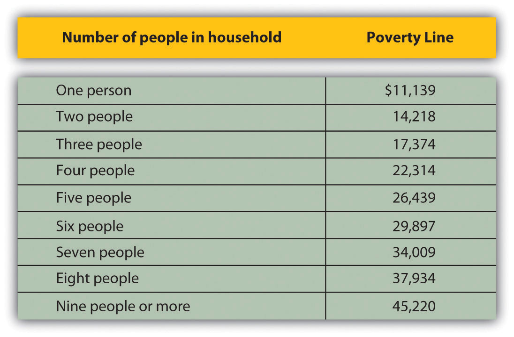
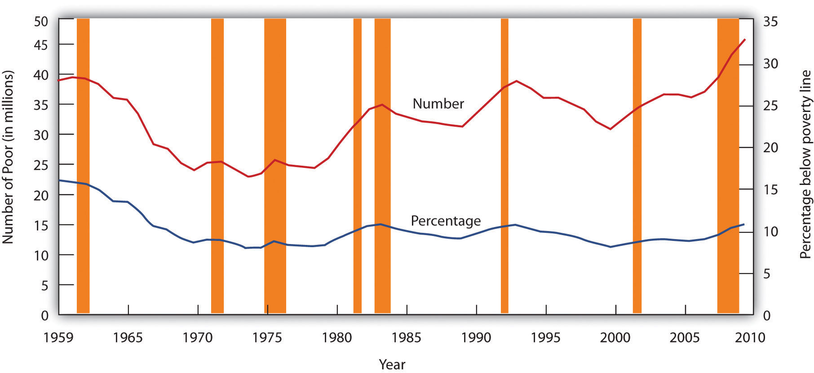
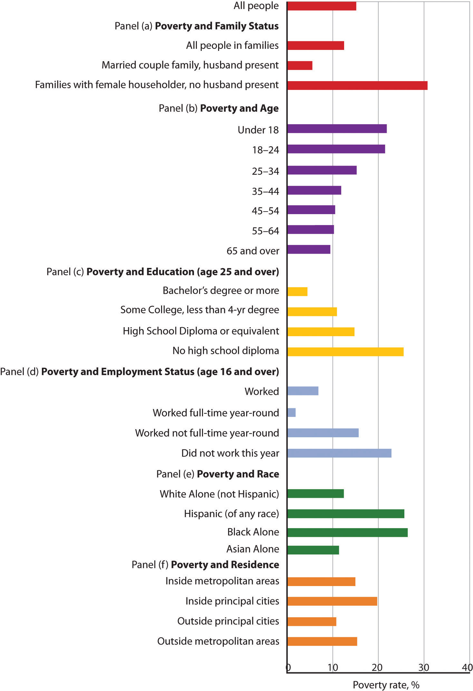
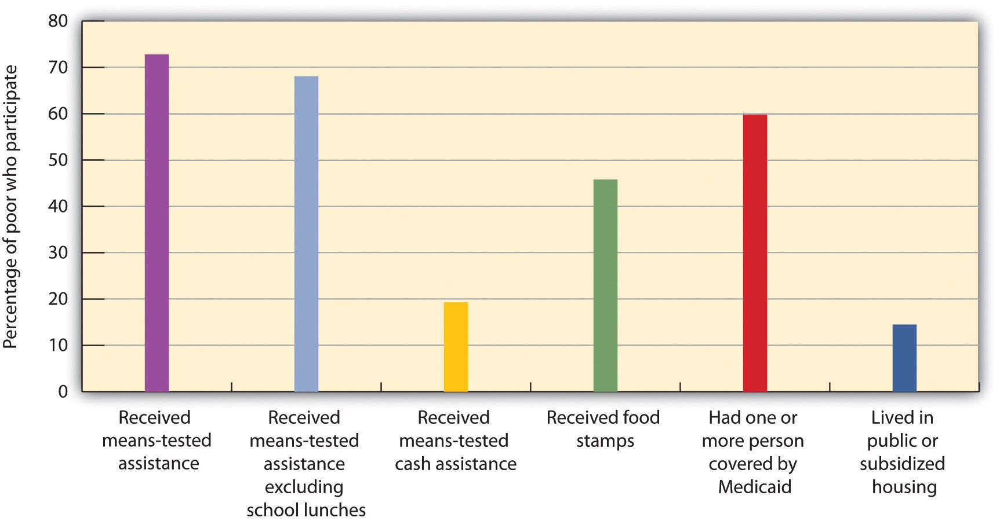
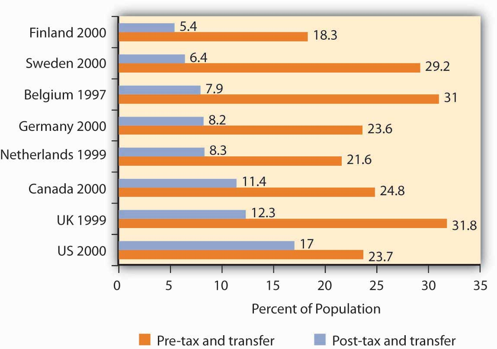

Poverty in the United States is something of a paradox. Per capita incomes in this country are among the highest on earth. Yet, the United States has a greater percentage of its population below the official poverty line than in the other industrialized nations. How can a nation that is so rich have so many people who are poor?
There is no single answer to the question of why so many people are poor. But we shall see that there are economic factors at work that help to explain poverty. We shall also examine the nature of the government’s response to poverty and the impact that response has. First, however, we shall examine the definition of poverty and look at some characteristics of the poor in the United States.
Suppose you were asked to determine whether a particular family was poor or not poor. How would you do it?
You might begin by listing the goods and services that would be needed to provide a minimum standard of living and then finding out if the family’s income was enough to purchase those items. If it were not, you might conclude that the family was poor. Alternatively, you might examine the family’s income relative to the incomes of other families in the community or in the nation. If the family was on the low end of the income scale, you might classify it as poor.
These two approaches represent two bases on which poverty is defined. The first is an absolute income testIncome test that sets a specific income level and defines a person as poor if his or her income falls below that level., which sets a specific income level and defines a person as poor if his or her income falls below that level. The second is a relative income testIncome test in which people whose incomes fall at the bottom of the income distribution are considered poor., in which people whose incomes fall at the bottom of the income distribution are considered poor. For example, we could rank households according to income as we did in the previous section on income inequality and define the lowest one-fifth of households as poor. In 2010, any U.S. household with an annual income below $20,000 fell in this category.
In contrast, to determine who is poor according to the absolute income test, we define a specific level of income, independent of how many households fall above or below it. The federal government defines a household as poor if the household’s annual income falls below a dollar figure called the poverty lineAmount of annual income below which the federal government defines a household as poor.. In 2010 the poverty line for a family of four was an income of $22,314. Figure 19.2 "Weighted Average Poverty Thresholds in 2010, by Size of Family" shows the poverty line for various family sizes.
Figure 19.2 Weighted Average Poverty Thresholds in 2010, by Size of Family
The Census Bureau uses a set of 48 money income thresholds that vary by family size and composition to determine who is in poverty. The “Weighted Average Poverty Thresholds” in the accompanying table is a summary of the 48 thresholds used by the census bureau. It provides a general sense of the “poverty line” based on the relative number of families by size and composition.
Source: DeNavas-Walt, Carmen, Bernadette D. Proctor, and Jessica Smith, U.S. Census Bureau, Current Population Reports, P60-239, Income, Poverty, and Health Insurance Coverage in the United States: 2010, U.S. Government Printing Office, Washington, D.C., 2011; p. 61.
The concept of a poverty line grew out of a Department of Agriculture study in 1955 that found families spending one-third of their incomes on food. With the one-third figure as a guide, the Department then selected food plans that met the minimum daily nutritional requirements established by the federal government. The cost of the least expensive plan for each household size was multiplied by three to determine the income below which a household would be considered poor. The government used this method to count the number of poor people from 1959 to 1969. The poverty line was adjusted each year as food prices changed. Beginning in 1969, the poverty line was adjusted annually by the average percentage price change for all consumer goods, not just changes in the price of food.
There is little to be said for this methodology for defining poverty. No attempt is made to establish an income at which a household could purchase basic necessities. Indeed, no attempt is made in the definition to establish what such necessities might be. The day has long passed when the average household devoted one-third of its income to food purchases; today such purchases account for less than one-seventh of household income. Still, it is useful to have some threshold that is consistent from one year to the next so that progress—or the lack thereof—in the fight against poverty can be assessed. In addition, the U.S. Census Bureau and the Bureau of Labor Statistics have begun working on more broad-based alternative measures of poverty. The new Supplemental Poverty Measure is based on expenses for food, clothing, shelter, and utilities; adjusts for geographic differences; adds in various in-kind benefits such as school lunches, housing subsidies, and energy assistance; includes tax credits; and then subtracts out taxes, work expenses, and out-of-pocket medical expenses.Kathleen Short, U.S. Census Bureau, Current Population Reports P60-241, Supplemental Poverty Measure: 2010, U.S. Government Printing Office, Washington, DC, November 2011.
The percentage of the population that falls below the poverty line is called the poverty rateThe percentage of the population that falls below the poverty line.. Figure 19.3 "The Poverty Rate in the United States, 1959–2010" shows both the number of people and the percentage of the population that fell below the poverty line each year since 1959.
Figure 19.3 The Poverty Rate in the United States, 1959–2010
The curve shows the percentage of people who lived in households that fell below the poverty line in each year from 1959 to 2010. The poverty rate fell through the 1960s and since has been hovering between about 12% and 15%. It tends to rise during recessions.
Source: DeNavas-Walt, Carmen, Bernadette D. Proctor, and Jessica Smith, U.S. Census Bureau, Current Population Reports P60-239, Income, Poverty, and Health Insurance Coverage in the United States: 2010, U.S. Government Printing Office, Washington DC, 2011; Figure 4, p. 14.
Despite its shortcomings, measuring poverty using an absolute measure allows for the possibility of progress in reducing it; using a relative measure of poverty does not, since there will always be a lowest 1/5, or 1/10 of the population. But relative measures do make an important point: Poverty is in large measure a relative concept. In the United States, people defined as poor have much higher incomes than most of the world’s people or even than average Americans did as recently as the early 1970s. By international and historical standards, the average poor person in the United States is rich! The material possessions of America’s poor would be considered lavish in another time and in another place. For example, based on data from 2005 to 2009, 42% of poor households in the United States owned their own homes, nearly 75% owned a car, and 64% have cable or satellite TV. Over 80% of poor households had air conditioning. Forty years ago, only 36% of the entire population in the United States had air conditioning. The average poor person in the United States has more living space than the average person in London, Paris, Vienna, or Athens.Robert Rector and Rachel Sheffield, “Understanding Poverty in the United States: Surprising Facts about America’s Poor,” Heritage Foundation, Policy Research & Analysis, No. 2607, September 13, 2011.
We often think of poverty as meaning that poor people are unable to purchase adequate food. Yet, according to Department of Agriculture surveys, 83% of poor people report that they have adequate food and 96% of poor parents report that their children are never hungry because they cannot afford food. In short, poor people in the United States enjoy a standard of living that would be considered quite comfortable in many parts of the developed world—and lavish in the less developed world.Ibid.
But people judge their incomes relative to incomes of people around them, not relative to people everywhere on the planet or to people in years past. You may feel poor when you compare yourself to some of your classmates who may have fancier cars or better clothes. And a family of four in a Los Angeles slum with an annual income of $13,000 surely does not feel rich because its income is many times higher than the average family income in Ethiopia or of Americans of several decades ago. While the material possessions of poor Americans are vast by Ethiopian standards, they are low in comparison to how the average American lives. What we think of as poverty clearly depends more on what people around us are earning than on some absolute measure of income.
Both the absolute and relative income approaches are used in discussions of the poverty problem. When we speak of the number of poor people, we are typically using an absolute income test of poverty. When we speak of the problems of those at the bottom of the income distribution, we are speaking in terms of a relative income test. In the European Union, for example, the poverty line is set at 60% of the median income of each member nation in a particular year. That is an example of a relative measure of poverty. In the rest of this section, we focus on the absolute income test of poverty used in the United States.
There is no iron law of poverty that dictates that a household with certain characteristics will be poor. Nonetheless, poverty is much more highly concentrated among some groups than among others. The six characteristics of families that are important for describing who in the United States constitute the poor are whether or not the family is headed by a female, age, the level of education, whether or not the head of the family is working, the race of the household, and geography.
Figure 19.4 "The Demographics of Poverty in the United States, 2010" shows poverty rates for various groups and for the population as a whole in 2010. What does it tell us?
The incidence of poverty soars when several of these demographic factors associated with poverty are combined. For example, the poverty rate for families with children that are headed by women who lack a high school education is higher than 50%.
The new, more broad-based Supplemental Poverty Measure shows an increase of only 0.1 compared to the official poverty rate measure, but bigger differences for different segments of the population. For example, a smaller percentage of people under the age of 18 are poor according to the supplemental poverty measure (18.2% versus 22.5%), while a larger percentage of those over 64 years of age are considered poor (15.9% versus 9.0%). The new measure also shows lower poverty rates among blacks, renters, people living outside metropolitan areas, and those covered by only public health insurance. Other groups show the same or higher poverty rates.Kathleen Short, U.S. Census Bureau, Current Population Reports P60-241, Supplemental Poverty Measure: 2010, U.S. Government Printing Office, Washington, DC, November 2011.
Figure 19.4 The Demographics of Poverty in the United States, 2010
Poverty rates in the United States vary significantly according to a variety of demographic factors. Panels (a) through (f) compare poverty rates among different groups of the U.S. population. The data are for 2010.
Source: DeNavas-Walt, Carmen, Bernadette D. Proctor, and Jessica C. Smith, U.S. Census Bureau, Current Population Reports, P60-239, Income, Poverty, and Health Insurance Coverage: 2010, U.S. Government Printing Office, Washington DC, 2011. Data for educational attainment, employment status, and residence from the Annual Social and Economic Supplement 2010, poverty tables at http://www.census.gov/hhes/www/cpstables/032011/pov/toc.htm.
Consider a young single parent with three small children. The parent is not employed and has no support from other relatives. What does the government provide for the family?
The primary form of cash assistance is likely to come from a program called Temporary Assistance for Needy Families (TANF). This program began with the passage of the Personal Responsibility and Work Opportunity Reconciliation Act of 1996. It replaced Aid to Families with Dependent Children (AFDC). TANF is funded by the federal government but administered through the states. Eligibility is limited to two years of continuous payments and to five years in a person’s lifetime, although 20% of a state’s caseload may be exempted from this requirement.
In addition to this assistance, the family is likely to qualify for food stamps, which are vouchers that can be exchanged for food at the grocery store. The family may also receive rent vouchers, which can be used as payment for private housing. The family may qualify for Medicaid, a program that pays for physician and hospital care as well as for prescription drugs.
A host of other programs provide help ranging from counseling in nutrition to job placement services. The parent may qualify for federal assistance in attending college. The children may participate in the Head Start program, a program of preschool education designed primarily for low-income children. If the poverty rate in the area is unusually high, local public schools the children attend may receive extra federal aid. Welfare programsThe array of programs that government provides to alleviate poverty. are the array of programs that government provides to alleviate poverty.
In addition to public sector support, a wide range of help is available from private sector charities. These may provide scholarships for education, employment assistance, and other aid.
Figure 19.5 "Welfare Programs and the Poor" shows participation rates in the major federal programs to help the poor.
Figure 19.5 Welfare Programs and the Poor
Many people who fall below the poverty line have not received aid from particular programs.
Source: U.S. Census Bureau, Current Population Survey, 2010 Annual Social and Economic Supplement.
Not all people whose incomes fall below the poverty line received aid. In 2010, a substantial majority of those counted as poor received some form of aid. However, as shown in Figure 19.5 "Welfare Programs and the Poor", the percentages who were helped by individual programs were much lower. Less than 20% of people below the poverty line received some form of cash assistance in 2010. About 45% received food stamps and nearly 60% lived in a household in which one or more people received medical services through Medicaid. Only about one-seventh of the people living in poverty received some form of housing aid.
Although for the most part poverty programs are federally funded, individual states set eligibility standards and administer the programs. Allowing states to establish their own programs was a hallmark feature of the 1996 welfare reform. As state budgets have come under greater pressure, many states have tightened standards.
Aid provided to people falls into two broad categories: cash and noncash assistance. Cash assistanceA money payment that an aid recipient can spend as he or she wishes. is a money payment that a recipient can spend as he or she wishes. Noncash assistanceThe provision of specific goods and services, such as food or medical services, job training, or subsidized child care rather than cash. is the provision of specific goods and services, such as food or medical services, job training, or subsidized child care rather than cash.
Noncash assistance is the most important form of aid to the poor. The large share of noncash relative to cash assistance raises two issues. First, since the poor would be better off (that is, reach a higher level of satisfaction) with cash rather than noncash assistance, why is noncash aid such a large percentage of total aid to the poor? Second, the importance of noncash assistance raises an important issue concerning the methodology by which the poverty rate is measured in the United States. We examine these issues in turn.
Why Noncash Aid?
Suppose you had a choice between receiving $515 or a television set worth $515. Neither gift is taxable. Which would you take?
Given a choice between cash and an equivalent value in merchandise, you would probably take the cash. Unless the television set happened to be exactly what you would purchase with the $515, you could find some other set of goods and services that you would prefer to the TV set. The same is true of funds that you can spend on anything versus funds whose spending is restricted. Given a choice of $515 that you could spend on anything and $515 that you could spend only on food, which would you choose? A given pool of funds allows consumers a greater degree of satisfaction than does a specific set of goods and services.
We can conclude that poor people who receive government aid would be better off from their own perspectives with cash grants than with noncash aid. Why, then, is most government aid given as noncash benefits?
Economists have suggested two explanations. The first is based on the preferences of donors. Recipients might prefer cash, but the preferences of donors matter also. The donors, in this case, are taxpayers. Suppose they want poor people to have specific things—perhaps food, housing, and medical care.
Given such donor preferences, it is not surprising to find aid targeted at providing these basic goods and services. A second explanation has to do with the political clout of the poor. The poor are not likely to be successful competitors in the contest to be at the receiving end of public sector income redistribution efforts; most redistribution goes to people who are not poor. But firms that provide services such as housing or medical care might be highly effective lobbyists for programs that increase the demand for their products. They could be expected to seek more help for the poor in the form of noncash aid that increases their own demand and profits.Students who have studied rent seeking behavior will recognize this argument. It falls within the public choice perspective of public finance theory.
Poverty Management and Noncash Aid
Only cash income is counted in determining the official poverty rate. The value of food, medical care, or housing provided through various noncash assistance programs is not included in household income. That is an important omission, because most government aid is noncash aid. Data for the official poverty rate thus do not reflect the full extent to which government programs act to reduce poverty.
The Census Bureau estimates the impact of noncash assistance on poverty. If a typical household would prefer, say, $515 in cash to $515 in food stamps, then $515 worth of food stamps is not valued at $515 in cash. Economists at the Census Bureau adjust the value of noncash aid downward to reflect an estimate of its lesser value to households. Suppose, for example, that given the choice between $515 in food stamps and $475 in cash, a household reports that it is indifferent between the two—either would be equally satisfactory. That implies that $515 in food stamps generates satisfaction equal to $475 in cash; the food stamps are thus “worth” $475 to the household.
The welfare system in the United States came under increasing attack in the 1980s and early 1990s. It was perceived to be expensive, and it had clearly failed to eliminate poverty. Many observers worried that welfare was becoming a way of life for people who had withdrawn from the labor force, and that existing welfare programs did not provide an incentive for people to work. President Clinton made welfare reform one of the key issues in the 1992 presidential campaign.
The Personal Responsibility and Work Opportunity Reconciliation Act of 1996 was designed to move people from welfare to work. It eliminated the entitlement aspect of welfare by defining a maximum period of eligibility. It gave states considerable scope in designing their own programs. In the first years following welfare reform, the number of people on welfare dropped by several million. Much research on the impact of reform showed that caseloads declined and employment increased and that the law did not have an adverse effect on poverty or the well-being of children. This positive outcome seemed to have resulted from an expansion of the earned income tax credit that also occurred, the overall low unemployment rate until the most recent few years, and larger behavioral responses than had been expected.Marianne P. Bitler and Hilary W. Hoynes, “The State of the Social Safety Net in the Post-Welfare Reform Era,” Brookings Papers on Economic Activity (Fall 2010): 71–127.
Advocates of welfare reform proclaimed victory, while critics pointed to the booming economy, the tight labor market, and the general increase in the number of jobs over the same period. The recession that began at the end of 2007 and the ensuing slow recovery in the unemployment rate provided a real-time test of the effects of the reform. Economists Marianne Bitler and Hilary Hoynes analyzed the impact of welfare reform during the Great Recession on nonelderly families with children. They found that participation in cash assistance programs seemed less responsive to the downturn but that participation in noncash safety net programs, particularly the food stamp program, had become more responsive. They did find some evidence that the increase in poverty or near-poverty status might have been greater than it would have been without the reform.Marianne P. Bitler and Hilary W. Hoynes, “The State of the Social Safety Net in the Post-Welfare Reform Era,” Brookings Papers on Economic Activity (Fall 2010): 71–127.
Just as the increase in income inequality begs for explanation, so does the question of why poverty seems so persistent. Should not the long periods of economic growth in the 1980s and 1990s and from 2003 to late 2007 have substantially reduced poverty? Have the various government programs been ineffective?
Clearly, some of the same factors that have contributed to rising income inequality have also contributed to the persistence of poverty. In particular, the increases in households headed by females and the growing gaps in wages between skilled and unskilled workers have been major contributors.
Tax policy changes have reduced the extent of poverty. In addition to general reductions in tax rates, the Earned Income Tax Credit, which began in 1975 and was expanded in the 1990s, provides people below a certain income level with a supplement for each dollar of income earned. This supplement, roughly 30 cents for every dollar earned, is received as a tax refund at the end of the year.
Figure 19.6 Percentages of Population in Eight Countries with Disposable Incomes Less Than 1/2 the National Median
Source: Timothy M. Smeeding, “Public Policy, Economic Inequality, and Poverty: The United States in Comparative Perspectives,” Social Science Quarterly, 86 (December 2005): 955–983.
Taken together, though, transfer payment and tax programs in the United States are less effective in reducing poverty than are the programs of other developed countries. Figure 19.6 "Percentages of Population in Eight Countries with Disposable Incomes Less Than 1/2 the National Median" shows the percentage of the population in eight developed countries with a disposable income (income after taxes) less than one-half the national median. The figure shows this percentage both before and after tax and transfer payment programs are considered. Clearly, the United States is the least aggressive in seeking to eliminate poverty among the eight countries shown.
How does poverty relate to work? Look back at Figure 19.4 "The Demographics of Poverty in the United States, 2010". Many of the poor are children or adults over age 65 and some are already working full time. Taken together, these three groups represent more than half of those in poverty. Also included amongst the poor are people who are ill or disabled, people who do not work due to family or home reasons, and people who are in school. The Census Bureau found in 2010 that of the nation’s 46.2 million poor people, nearly 3 million reported they were not working or worked only part of the year or part time because they could not find full-time work.Current Population Survey, Annual Social and Economic Supplement 2010, Table POV24. So, while more employment opportunities would partly alleviate poverty, reducing unemployment is clearly only part of the answer.
How effective have government programs been in alleviating poverty? The Census Bureau’s supplemental poverty measure begins to answer that question. For example, those calculations show a reduction of two percentage points in the poverty rate, from 18% to 16%, when the earned income tax credit is included, ceteris paribus. Inclusion of the Supplemental Nutritional Assistance Program reduced the poverty rate by 1.7%, and housing subsidies reduced it by 0.9%. Other programs each had smaller effects on poverty reduction. But it is also important to distinguish between the poverty rate and the degree of poverty. Cash programs might reduce the degree of poverty but might not affect a family’s income enough to actually move that family above the poverty line. Thus, even though the gap between the family’s income and the poverty line is lessened, the family is still classified as poor and would thus still be included in the poverty-rate figures.
The Smiths, a family of four, have an income of $20,500 in 2006. Using the absolute income test approach and the data given in the chapter, determine if this family is poor. Use the relative income test to determine if this family is poor.
The governments of the United States and of Great Britain have taken sharply different courses in their welfare reform efforts. In the United States, the primary reform effort was undertaken in 1996, with the declaration to eliminate welfare as an entitlement and the beginning of programs that required recipients to enter the labor force within two years. President Clinton promised to “end welfare as we know it.”
In Britain, the government of Tony Blair took a radically different approach. Prime Minister Blair promised to “make welfare popular again.” His government undertook to establish what he called a “third way” to welfare reform, one that emphasized returning recipients to the workforce but that also sought explicitly to end child poverty.
The British program required recipients to get counseling aimed at encouraging them to return to the labor force. It did not, however, require that they obtain jobs. It also included a program of “making work pay,” the primary feature of which was the creation of a National Minimum Wage, one that was set higher than the minimum wage in the United States. In the United States, the minimum wage equaled 34% of median private sector wages in 2002; the British minimum wage was set at 45% of the median private sector wage in 2002.
The British program, which was called the New Deal, featured tax benefits for poor families with children, whether they worked or not. It also included a Sure Start program of child care for poor people with children under three years old. In short, the Blair program was a more extensive social welfare program than the 1996 act in the United States.
The table below compares results of the two programs in terms of their impact on child poverty, using an “absolute” poverty line and also using a relative poverty line.
| Child Poverty Rates, Pre- and Post- Reform | ||
|---|---|---|
| United Kingdom | Absolute (percent) | Relative (percent) |
| 1997–1998 | 24 | 25 |
| 2002–2003 | 12 | 21 |
| Change | −12 | −4 |
| United States | Absolute (percent) | Relative (percent) |
| 1992 | 19 | 38 |
| 2001 | 13 | 35 |
| Change | −6 | −3 |
| Child Poverty Rates in Single-Mother Families, Pre- and Post- Reform | ||
|---|---|---|
| United Kingdom | Absolute (percent) | Relative (percent) |
| 1997–1998 | 40 | 41 |
| 2002–2003 | 15 | 33 |
| Change | −25 | −8 |
| United States | Absolute (percent) | Relative (percent) |
| 1992 | 44 | 67 |
| 2001 | 28 | 59 |
| Change | −16 | −8 |
The relative measure of child poverty is the method of measuring poverty adopted by the European Union. It draws the poverty line at 60% of median income. The poverty line is thus a moving target against which it is more difficult to make progress.
Hills and Waldfogel compared the British results to those in the United States in terms of the relative impact on welfare caseloads, employment of women having families, and reduction in child poverty. They note that reduction in welfare caseloads was much greater in the United States, with caseloads falling from 5.5 million to 2.3 million. In Britain, the reduction in caseloads was much smaller. In terms of impact on employment among women, the United States again experienced a much more significant increase. In terms of reduction of child poverty, however, the British approach clearly achieved a greater reduction. The British approach also increased incomes of families in the bottom 10% of the income distribution (i.e., the bottom decile) by more than that achieved in the United States. In Britain, incomes of families in the bottom decile rose 22%, and for families with children they rose 24%. In the United States, those in the bottom decile had more modest gains.
Would the United States ever adopt a New Deal program such as the Blair program in Great Britain? That, according to Hills and Waldfogel, would require a change in attitudes in the United States that they regard as unlikely.
Source: John Hills and Jane Waldfogel, “A ‘Third Way’ in Welfare Reform? Evidence from the United Kingdom,” Journal of Policy Analysis and Management, 23(4) (2004): 765–88.
According to the absolute income test, the Smiths are poor because their income of $20,500 falls below the 2006 poverty threshold of $20,614. According to the relative income test, they are not poor because their $20,500 income is above the upper limit of the lowest quintile, $20,035.